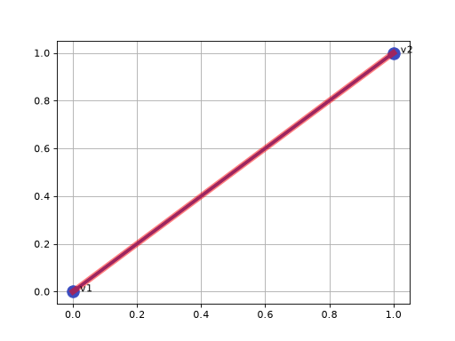
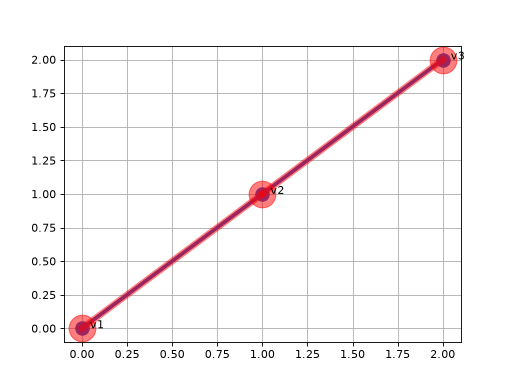
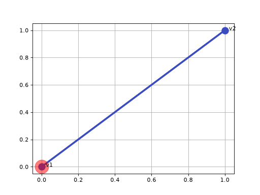
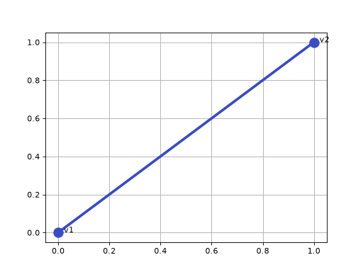
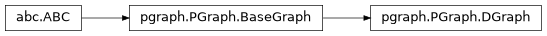
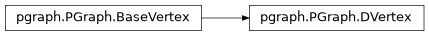
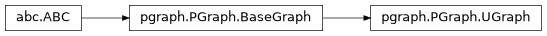

PGraph module
- class pgraph.PGraph.BaseGraph(*, metric=None, heuristic=None, verbose=False, dim=None, vertex_class=None, edge_class=None)[source]
Bases:
ABC- classmethod Adjacency(A, coords=None, names=None, **kwargs)[source]
Create graph from adjacency matrix
- Parameters:
- Raises:
ValueError –
Ais not square, or the length ofnamesor the number of rows ofcoordsdoes not matchATypeError –
vertex_classoredge_classis not a suitable class, seeBaseGraph.__init__()
- Returns:
graph
- Return type:
Create a directed or undirected graph where non-zero elements
A[i,j]correspond to edges from vertexito vertexj.A non-zero diagonal element
A[i,i]is a self-loop on vertexi, for both kinds of graph.Warning
For undirected graph
Ashould be symmetric but this is not checked. Only the upper triangular part, including the diagonal, is used. Elements are costs, not edge counts: a non-zero element is a single edge with that element as its cost, so parallel edges cannot be created this way.- Seealso:
- classmethod Dict(d, reverse=False, **kwargs)[source]
Create graph from parent/child dictionary
- Parameters:
- Raises:
TypeError –
vertex_classoredge_classis not a suitable class, seeBaseGraph.__init__()- Returns:
graph
- Return type:
Behaves like a constructor for a
DGraphorUGraphfrom a dictionary that maps vertices to parents. From this information it can create a tree graph.By default parent vertices are linked their children. If
reverseis True then children are linked to their parents.>>> from pgraph import UGraph >>> d = {'b': 'a', 'c': 'a', 'd': 'b'} >>> g = UGraph.Dict(d) >>> print(g) UGraph: 4 vertices, 3 edges, 1 component
- Seealso:
- Laplacian()[source]
Laplacian matrix for the graph (deprecated)
Deprecated since version 1.0: Use
laplacian()instead. A capitalized name denotes a class method that constructs a graph, likeAdjacency()andDict(); this is an instance method that returns a matrix.
- add_edge(v1, v2=None, **kwargs)[source]
Add an edge to the graph (base class method)
- Parameters:
v1 (BaseVertex subclass, str or Edge) – first vertex (start if a directed graph), or an existing edge that already carries its two vertices
v2 (BaseVertex subclass or str, optional) – second vertex (end if a directed graph), must be omitted if
v1is an edgekwargs (
Any) – optional arguments to pass toBaseVertex.connect, not allowed ifv1is an edge
- Raises:
TypeError –
v1orv2is of the wrong type, orv2,costordatais given along with an edgeValueError – the edge has no vertices, or the vertices do not belong to this graph
- Returns:
edge
- Return type:
g.add_edge(v1, v2)creates an edge between a vertex pair and adds it to the graph.g.add_edge(e)takes an edge, or an instance of anEdgesubclass, that was constructed with its two vertices and adds it to the graph, just asg.add_vertex(v)takes an existing vertex.
This is a graph centric way of creating an edge. The alternative is the
connectmethod of a vertex.>>> from pgraph import UGraph >>> g = UGraph() >>> v1 = g.add_vertex(coord=[0,0], name='v1') >>> v2 = g.add_vertex(coord=[1,1], name='v2') >>> v3 = g.add_vertex(coord=[2,2], name='v3') >>> e = g.add_edge(v1, v2) >>> print(e) Edge{[v1] -- [v2], cost=1.414} >>> e2 = g.add_edge('v2', 'v3', cost=99) >>> print(e2) Edge{[v2] -- [v3], cost=99}
Adding an instance of a user-defined
Edgesubclass:Note
To supply an edge that does not yet have vertices use
g.add_edge(v1, v2, edge=e)ore.connect(v1, v2).
- add_vertex(coord=None, name=None)[source]
Add a vertex to the graph
- Parameters:
- Raises:
TypeError –
coordis aBaseVertexthat is not an instance of this graph’svertex_classValueError – the name is already used by another vertex in the graph, or
coordis a vertex that already belongs to a graphValueError – the graph was constructed with
dim, andcoordis given but its length doesn’t match
- Returns:
the added vertex
- Return type:
BaseVertex subclass
g.add_vertex()creates a new vertex with optionalcoordandname.g.add_vertex(v)takes an instance of this graph’svertex_class(by default anyUVertexfor aUGraph, anyDVertexfor aDGraph) and adds it to the graph.
If the vertex has no name and
nameis None give it a default name#NwhereNis the number of vertices, or the next integer above it that is not already used by a name in the graph.Names are unique within a graph, since they are how
g[name]finds a vertex, and a vertex belongs to one graph at a time.Changed in version 1.0: Adding a vertex whose name is already used raises
ValueError. It used to replace the earlier vertex in the name table, leaving it in the graph but unreachable by name. A default name could also clash with an existing one after a vertex had been removed.The vertex is placed into a dictionary with a key equal to its name.
This single implementation, shared by
UGraphandDGraph, is parameterized by the graph’svertex_classrather than duplicated per subclass – see Object lifecycle and graph-membership policy for why that matters.If the graph was constructed with a required
dim(seeBaseGraph.__init__()), every embedded vertex must have a coordinate of exactly that length – adding one of the wrong length raisesValueError:- Seealso:
- adjacency()[source]
Adjacency matrix of graph
- Returns:
adjacency matrix
- Return type:
ndarray(N,N)
The elements of the adjacency matrix
[i,j]are 1 if vertexiis connected to vertexj, else 0.>>> from pgraph import UGraph >>> import numpy as np >>> g = UGraph() >>> for i in range(5): ... g.add_vertex(np.random.rand(2)) UVertex[#0, coord=(0.2516, 0.4813)] UVertex[#1, coord=(0.01787, 0.8396)] UVertex[#2, coord=(0.04833, 0.9021)] UVertex[#3, coord=(0.2012, 0.7276)] UVertex[#4, coord=(0.9818, 0.6847)] >>> for i, j in [(0, 1), (0, 2), (0, 3), (1, 2), (1, 3), (3, 4)]: ... g.add_edge(g[i], g[j]) Edge{[#0] -- [#1], cost=0.4278} Edge{[#0] -- [#2], cost=0.4674} Edge{[#0] -- [#3], cost=0.2514} Edge{[#1] -- [#2], cost=0.06961} Edge{[#1] -- [#3], cost=0.2148} Edge{[#3] -- [#4], cost=0.7818} >>> A = g.adjacency() >>> print(A) [[0. 1. 1. 1. 0.] [1. 0. 1. 1. 0.] [1. 1. 0. 0. 0.] [1. 1. 0. 0. 1.] [0. 0. 0. 1. 0.]]
Note
vertices are numbered in their order of creation. A vertex index can be resolved to a vertex reference by
graph[i].for an undirected graph the matrix is symmetric
Eigenvalues of
Aare real and are known as the spectrum of the graph.The element
A[i,j]is the number of walks of length one edge from vertexito vertexj, which is the number of edges between them (zero or one for a simple graph).If
Ak = A ** kthe elementAk[i,j]is the number of walks of lengthkfrom vertexito vertexj.
For graphs with parallel edges or loops
The matrix holds edge counts, so
kparallel edges fromitojgiveA[i,j] = kandAk = A ** kstill counts walks correctly. A self-loop adds to the diagonal: 2 for aUGraph(consistent withdegree()) and 1 for aDGraph. In every case each row ofAsums to the degree of that vertex.- Seealso:
- average_degree()[source]
Average degree of the graph
- Returns:
average degree
- Return type:
Average degree is \(2 E / N\) where \(E\) is the total number of edges and \(N\) is the number of vertices, for an undirected or a directed graph. It is the mean of
BaseVertex.degree, and every edge has two ends, so the degrees sum to \(2 E\).Parallel edges and self-loops are each counted as one edge in \(E\); a self-loop contributes 2 to the degree sum.
Changed in version 1.0: For a
DGraphthis was \(E / N\), the mean out-degree (which equals the mean in-degree). It is now \(2 E / N\), the mean of the degree, which is twice the old value. Useg.ne / g.nfor the previous number.>>> from pgraph import UGraph >>> g = UGraph() >>> v1 = g.add_vertex(name='v1') >>> v2 = g.add_vertex(name='v2') >>> v3 = g.add_vertex(name='v3') >>> g.add_edge(v1, v2) Edge{[v1] -- [v2], cost=None} >>> g.add_edge(v2, v3) Edge{[v2] -- [v3], cost=None} >>> print(g.average_degree()) 1.3333333333333333
- Seealso:
- closest(coord)[source]
BaseVertex closest to point
- Parameters:
coord (ndarray(n)) – coordinates of a point
- Returns:
closest vertex and its distance, or
(None, inf)if no vertex in the graph has a coordinate- Return type:
BaseVertex subclass or None, float
Returns the vertex closest to the given point. Distance is computed according to the graph’s metric. Vertices without a coordinate (
coordis None) are skipped – they have no position to compare.>>> from pgraph import UGraph >>> g = UGraph() >>> v1 = g.add_vertex(coord=[0,0], name='v1') >>> v2 = g.add_vertex(coord=[10,10], name='v2') >>> vertex, d = g.closest([1, 1]) >>> print(vertex, d) [v1] 1.4142135623730951
- Seealso:
- component(c)[source]
All vertices in specified graph component
- Parameters:
c (
int) – component index- Returns:
vertices belonging to component
c- Return type:
list of BaseVertex subclass
graph.component(c)is a list of all vertices in graph componentc.>>> from pgraph import UGraph >>> g = UGraph() >>> v1 = g.add_vertex(name='v1') >>> v2 = g.add_vertex(name='v2') >>> v3 = g.add_vertex(name='v3') >>> g.add_edge(v1, v2) Edge{[v1] -- [v2], cost=None} >>> print(g.component(0)) [UVertex[v1, coord=(?)], UVertex[v2, coord=(?)]]
- Seealso:
- connectivity(vertices=None)[source]
Graph connectivity
- Parameters:
vertices (iterable of BaseVertex subclass, optional) – vertices to report connectivity for, defaults to all vertices in the graph
- Returns:
a list with the number of edges per vertex
- Return type:
This is the
BaseVertex.degreeof each vertex: the number of edge ends at it, which is the number of edges connected to it except that a self-loop has two ends and so counts twice. For a directed graph it counts the edges entering the vertex as well as those leaving.Changed in version 1.0: For a
DGraphthis counted only the edges leaving each vertex. Use[v.out_degree for v in g]for the previous values.The average vertex connectivity is:
mean(g.connectivity())
and the minimum vertex connectivity is:
min(g.connectivity())
>>> from pgraph import UGraph >>> import numpy as np >>> g = UGraph() >>> for i in range(5): ... g.add_vertex(np.random.rand(2)) UVertex[#0, coord=(0.136, 0.5513)] UVertex[#1, coord=(0.7407, 0.03311)] UVertex[#2, coord=(0.6695, 0.1241)] UVertex[#3, coord=(0.4438, 0.4029)] UVertex[#4, coord=(0.3561, 0.343)] >>> for i, j in [(0, 1), (0, 2), (0, 3), (1, 2), (1, 3), (3, 4)]: ... g.add_edge(g[i], g[j]) Edge{[#0] -- [#1], cost=0.7964} Edge{[#0] -- [#2], cost=0.6835} Edge{[#0] -- [#3], cost=0.3417} Edge{[#1] -- [#2], cost=0.1155} Edge{[#1] -- [#3], cost=0.4743} Edge{[#3] -- [#4], cost=0.1062} >>> c = g.connectivity() >>> print(c) [3, 3, 2, 3, 1]
Note
This is the diagonal of
degree(). Parallel edges are counted individually.- Seealso:
- degree()[source]
Degree matrix of graph
- Returns:
degree matrix
- Return type:
ndarray(N,N)
This is a diagonal matrix where element
[i,i]is theBaseVertex.degreeof vertexi: the number of edge ends at it, so a self-loop counts twice. For a directed graph that is the edges entering plus the edges leaving.Changed in version 1.0: For a
DGraphthis was the out-degree matrix, counting only the edges leaving each vertex. It is now the total, in plus out. The old matrix isnp.diag([v.out_degree for v in g]), which is whatlaplacian()uses.>>> from pgraph import UGraph >>> import numpy as np >>> g = UGraph() >>> for i in range(5): ... g.add_vertex(np.random.rand(2)) UVertex[#0, coord=(0.9678, 0.6245)] UVertex[#1, coord=(0.3471, 0.967)] UVertex[#2, coord=(0.617, 0.6356)] UVertex[#3, coord=(0.9388, 0.03947)] UVertex[#4, coord=(0.3338, 0.4195)] >>> for i, j in [(0, 1), (0, 2), (0, 3), (1, 2), (1, 3), (3, 4)]: ... g.add_edge(g[i], g[j]) Edge{[#0] -- [#1], cost=0.7089} Edge{[#0] -- [#2], cost=0.351} Edge{[#0] -- [#3], cost=0.5858} Edge{[#1] -- [#2], cost=0.4274} Edge{[#1] -- [#3], cost=1.1} Edge{[#3] -- [#4], cost=0.7145} >>> d = g.degree() >>> print(d) [[3 0 0 0 0] [0 3 0 0 0] [0 0 2 0 0] [0 0 0 3 0] [0 0 0 0 1]]
For graphs with parallel edges or loops
Every edge is counted, so
kparallel edges between two vertices addkto the degree of each end. A self-loop adds 2, for both kinds of graph, since it has two ends.
- distance()[source]
Distance matrix of graph
The elements of the distance matrix
D[i,j]is the edge cost of moving from vertexito vertexj. It is zero if the vertices are not connected.>>> from pgraph import UGraph >>> import numpy as np >>> g = UGraph() >>> for i in range(5): ... g.add_vertex(np.random.rand(2)) UVertex[#0, coord=(0.3983, 0.7471)] UVertex[#1, coord=(0.415, 0.5002)] UVertex[#2, coord=(0.9462, 0.9275)] UVertex[#3, coord=(0.1783, 0.05429)] UVertex[#4, coord=(0.3991, 0.7482)] >>> for i, j in [(0, 1), (0, 2), (0, 3), (1, 2), (1, 3), (3, 4)]: ... g.add_edge(g[i], g[j]) Edge{[#0] -- [#1], cost=0.2475} Edge{[#0] -- [#2], cost=0.5768} Edge{[#0] -- [#3], cost=0.727} Edge{[#1] -- [#2], cost=0.6817} Edge{[#1] -- [#3], cost=0.5049} Edge{[#3] -- [#4], cost=0.7282} >>> d = g.distance() >>> print(d) [[0. 0.24747518 0.57675679 0.72697248 0. ] [0.24747518 0. 0.68171964 0.50487724 0. ] [0.57675679 0.68171964 0. 0. 0. ] [0.72697248 0.50487724 0. 0. 0.72824444] [0. 0. 0. 0.72824444 0. ]]
For graphs with parallel edges or loops
If there are parallel edges the element is the cost of the cheapest of them. A self-loop gives a non-zero diagonal element equal to its cost.
- Seealso:
- dotfile(filename=None, direction=None)[source]
Export graph as a GraphViz dot file
- Parameters:
- Return type:
g.dotfile()creates the specified file which contains the GraphViz code to represent the embedded graph. By default output is to the console.This is
export()withformat="dot"and edge costs left unlabelled, as it has always been. Useexport()for other formats or for edge labels.Note
The graph is undirected if it is a subclass of
UGraphThe graph is directed if it is a subclass of
DGraph
The
graphvizformattersdotandneatocan be used to render the graph in various formats including PDF, PNG, JPG, GIF, SVG, etc. The formmatters are similar, butdotis better suited for directed graphs whileneatois better suited for undirected graphs.Note
If
filenameis a file object then the file will not be closed after the GraphViz model is written.>>> from pgraph import UGraph >>> g = UGraph() >>> v1 = g.add_vertex(coord=[0,0], name='v1') >>> v2 = g.add_vertex(coord=[1,1], name='v2') >>> g.add_edge(v1, v2) Edge{[v1] -- [v2], cost=1.414} >>> g.dotfile() graph { "v1" [pos="0,0!"] "v2" [pos="1,1!"] "v1" -- "v2" }
- Seealso:
- property edge_class: type[Edge]
Class of the edges this graph creates
- Returns:
edge class
- Return type:
subclass of
Edge- Seealso:
- edges()[source]
Get all edges in graph (base class method)
- Returns:
All edges in the graph
- Return type:
set of Edge references
We can iterate over all edges in the graph by:
for e in g.edges(): print(e)
Note
Unlike
BaseVertex.edges(), which returns alistin connection order, this returns asetwith no defined iteration order.>>> from pgraph import UGraph >>> g = UGraph() >>> v1 = g.add_vertex(coord=[0,0], name='v1') >>> v2 = g.add_vertex(coord=[1,1], name='v2') >>> g.add_edge(v1, v2) Edge{[v1] -- [v2], cost=1.414} >>> print(g.edges()) {Edge{[v1] -- [v2], cost=1.414}}
- Seealso:
- export(filename=None, format=None, **options)[source]
Export the graph as text or as a rendered image
- Parameters:
filename (str, path-like or file object, optional) – destination path or open file, defaults to None
format (str, optional) –
"dot","mermaid","graphml","elk"or an image format"svg","pdf","png"…, inferred from the extension offilenameif not givenoptions (
Any) – format specific options, see below
- Raises:
ValueError – the format is unknown or cannot be inferred, or an image format is requested without a
filenameTypeError – an option is not valid for the format
RuntimeError – an image format is requested and GraphViz is not installed, or fails
- Returns:
the text if
filenameis None, otherwise None- Return type:
str or None
formatextensions
positions
options
"dot".dot.gvpos="x,y!"direction,colorcomponents,costs"mermaid".mmd.mermaidno
direction,colorcomponents,costs,fence"graphml".graphmlx,y,coordnone
"elk".elk.json.elkx,ysize,layout_options"svg""pdf""png"…the same
yes, via
neatoengine,direction,colorcomponents,costsThe text formats need nothing beyond the standard library. The image formats run the GraphViz
dotorneatoexecutable.>>> from pgraph import UGraph >>> g = UGraph() >>> v1 = g.add_vertex(coord=[0,0], name='v1') >>> v2 = g.add_vertex(coord=[1,1], name='v2') >>> g.add_edge(v1, v2, cost=2) Edge{[v1] -- [v2], cost=2} >>> print(g.export(format="mermaid", direction="LR")) flowchart LR n0["v1"] n1["v2"] n0 ---|"2"| n1
Note
Output is reproducible: vertices are written in creation order and edges in the order of their vertices, not in set order.
A file object passed as
filenameis written but not closed. A path is opened, and closed even if writing fails.Names are escaped for each format, and Mermaid, GraphML and ELK use generated ids so any vertex name is valid.
For graphs with parallel edges or loops
Every edge is written, each with its own cost, so parallel edges give repeated lines (DOT, Mermaid) or distinct
idelements (GraphML, ELK). A self-loop is written once, as an edge from a vertex to itself.- Seealso:
dotfile()showgraph()pgraph.exporters
- property heuristic: Callable[[ndarray[tuple[Any, ...], dtype[_ScalarT]]], float]
Get the heuristic distance metric for graph
- Returns:
heuristic distance metric
- Return type:
callable
This is a function of a single coordinate-difference vector (shape
(n,)), returning a scalar distance.
- highlight_edge(edge, scale=2, color='r', alpha=0.5)[source]
Highlight an edge in the graph
- Parameters:
- Raises:
ValueError –
edgedoes not connect two vertices, for example because it has been removed from the graph- Return type:
None
>>> from pgraph import UGraph >>> g = UGraph() >>> v1 = g.add_vertex(coord=[0,0], name='v1') >>> v2 = g.add_vertex(coord=[1,1], name='v2') >>> e = g.add_edge(v1, v2) >>> g.plot(block=None) >>> g.highlight_edge(e)
The plot produced looks like:
(
Source code,png,hires.png,pdf)
- Seealso:
- highlight_path(path, block=False, **kwargs)[source]
Highlight a path through the graph
- Parameters:
path (list of BaseVertex subclass) – sequence of vertices forming a path
block (bool or None, optional) – block until figure is dismissed, defaults to False. If None the figure is not shown.
kwargs (
Any) – arguments passed tohighlight_edge()andhighlight_vertex()
- Return type:
The vertices and edges along the path are overwritten with a different size/width and color.
>>> from pgraph import UGraph >>> g = UGraph() >>> v1 = g.add_vertex(coord=[0,0], name='v1') >>> v2 = g.add_vertex(coord=[1,1], name='v2') >>> v3 = g.add_vertex(coord=[2,2], name='v3') >>> g.add_edge(v1, v2) Edge{[v1] -- [v2], cost=1.414} >>> g.add_edge(v2, v3) Edge{[v2] -- [v3], cost=1.414} >>> g.plot(block=None) >>> g.highlight_path([v1, v2, v3], block=None)
(
Source code,png,hires.png,pdf)
- Seealso:
- highlight_vertex(vertex, scale=2, color='r', alpha=0.5)[source]
Highlight a vertex in the graph
- Parameters:
vertex (BaseVertex subclass, or iterable of BaseVertex subclass or str) – The vertex (or vertices, or vertex names) to highlight
scale (float, optional) – Overwrite with a line this much bigger than the original, defaults to 1.5
color (str, optional) – Overwrite with a line in this color, defaults to ‘r’
alpha (float, optional) – Transparency of the highlight, defaults to 0.5
- Return type:
None
>>> from pgraph import UGraph >>> g = UGraph() >>> v1 = g.add_vertex(coord=[0,0], name='v1') >>> v2 = g.add_vertex(coord=[1,1], name='v2') >>> g.add_edge(v1, v2) Edge{[v1] -- [v2], cost=1.414} >>> g.plot(block=None) >>> g.highlight_vertex(v1)
(
Source code,png,hires.png,pdf)
- incidence()[source]
Incidence matrix of graph
The elements of the incidence matrix
I[i,j]are 1 if vertexiis connected to edgej, else 0.>>> from pgraph import UGraph >>> import numpy as np >>> g = UGraph() >>> for i in range(5): ... g.add_vertex(np.random.rand(2)) UVertex[#0, coord=(0.6472, 0.5993)] UVertex[#1, coord=(0.3337, 0.6718)] UVertex[#2, coord=(0.9511, 0.8436)] UVertex[#3, coord=(0.146, 0.3823)] UVertex[#4, coord=(0.7511, 0.5888)] >>> for i, j in [(0, 1), (0, 2), (0, 3), (1, 2), (1, 3), (3, 4)]: ... g.add_edge(g[i], g[j]) Edge{[#0] -- [#1], cost=0.3217} Edge{[#0] -- [#2], cost=0.3899} Edge{[#0] -- [#3], cost=0.5461} Edge{[#1] -- [#2], cost=0.6408} Edge{[#1] -- [#3], cost=0.3451} Edge{[#3] -- [#4], cost=0.6394} >>> I = g.incidence() >>> print(I) [[1. 1. 0. 0. 0. 1.] [1. 0. 0. 1. 1. 0.] [0. 1. 0. 1. 0. 0.] [0. 0. 1. 0. 1. 1.] [0. 0. 1. 0. 0. 0.]]
Note
vertices are numbered in their order of creation. A vertex index can be resolved to a vertex reference by
graph[i].edges are numbered in the order they appear in
graph.edges().Both endpoints of every edge are marked, regardless of direction – for a
DGraphthis means a vertex that is only ever a target (never a source) still appears here, unlikedegree()/BaseVertex.degree, which count outgoing edges only. Iterating each vertex’s ownBaseVertex.edges()instead would silently drop such vertices for a directed graph.
For graphs with parallel edges or loops
Parallel edges each get their own column. For a
UGraphthe column of a self-loop holds a single 2 (it touches its vertex at both ends, so row sums still equaldegree()); for aDGraphit holds a single 1.- Seealso:
- iscyclic()[source]
Test if graph is cyclic
- Returns:
true if the graph contains at least one cycle
- Return type:
For an undirected graph this is a simple count: a forest (acyclic) has exactly
n - ncedges, one per component-connecting edge with no redundancy, so any excess indicates a cycle. This is O(1) givenn(),ne()andnc(), which are already cached.For a directed graph this runs Kahn’s algorithm: repeatedly remove vertices with no remaining incoming edges. If every vertex can eventually be removed, the graph is a DAG (acyclic); if some are never freed, they form a cycle. This is O(V+E), using vertices’ outgoing edges via
BaseVertex.adjacent()the same waypath_BFS()and friends do.Note
A self-loop is a cycle of length one, so it makes either kind of graph cyclic. Two parallel edges between the same pair of vertices are a cycle in an undirected graph, but a repeated arrow in a directed graph is not.
Note
A matrix-based test also exists in theory – a digraph is acyclic iff its adjacency matrix is nilpotent (all eigenvalues zero) – but that needs an O(N^3) eigendecomposition plus a floating-point zero-tolerance judgement call, to answer a question Kahn’s algorithm answers exactly with integers in O(V+E). Not used here for that reason.
>>> from pgraph import UGraph >>> g = UGraph() >>> v1 = g.add_vertex(name='v1') >>> v2 = g.add_vertex(name='v2') >>> v3 = g.add_vertex(name='v3') >>> g.add_edge(v1, v2) Edge{[v1] -- [v2], cost=None} >>> g.add_edge(v2, v3) Edge{[v2] -- [v3], cost=None} >>> print(g.iscyclic()) False >>> g.add_edge(v3, v1) Edge{[v3] -- [v1], cost=None} >>> print(g.iscyclic()) True
- Seealso:
- laplacian()[source]
Laplacian matrix for the graph
- Returns:
Laplacian matrix
- Return type:
NumPy ndarray
g.laplacian()is the Laplacian matrix (NxN) of the graph where N is the number of vertices.>>> from pgraph import UGraph >>> import numpy as np >>> g = UGraph() >>> for i in range(5): ... g.add_vertex(np.random.rand(2)) UVertex[#0, coord=(0.685, 0.6203)] UVertex[#1, coord=(0.02022, 0.5417)] UVertex[#2, coord=(0.7753, 0.9553)] UVertex[#3, coord=(0.1759, 0.5224)] UVertex[#4, coord=(0.7244, 0.4091)] >>> for i, j in [(0, 1), (0, 2), (0, 3), (1, 2), (1, 3), (3, 4)]: ... g.add_edge(g[i], g[j]) Edge{[#0] -- [#1], cost=0.6694} Edge{[#0] -- [#2], cost=0.3469} Edge{[#0] -- [#3], cost=0.5185} Edge{[#1] -- [#2], cost=0.861} Edge{[#1] -- [#3], cost=0.1569} Edge{[#3] -- [#4], cost=0.5601} >>> L = g.laplacian() >>> print(L) [[ 3. -1. -1. -1. 0.] [-1. 3. -1. -1. 0.] [-1. -1. 2. 0. 0.] [-1. -1. 0. 3. -1.] [ 0. 0. 0. -1. 1.]]
Note
Laplacian always has at least one zero eigenvalue (each row of
D_out - adjacency()sums to zero, so the all-ones vector is always a right null vector).For an undirected graph specifically: the Laplacian is symmetric and positive-semidefinite, and the number of zero-valued eigenvalues equals the number of connected components.
For a directed graph, this computes the out-degree Laplacian (a real, recognized construction, e.g. in directed consensus/synchronization literature) – but it is generally not symmetric, its eigenvalues can be complex, and the zero-eigenvalue/component-count relationship above does not hold. For example a simple weakly-connected out-tree (one component) already has two zero eigenvalues, not one.
For graphs with parallel edges or loops
Both the out-degree and
adjacency()count edges, so the identityL = D_out - adjacency()and the zero row sums hold unchanged. A self-loop adds the same amount to both and cancels out of the Laplacian entirely.Note
D_outis the diagonal matrix ofBaseVertex.out_degree. For an undirected graph that isdegree(), but for a directed graphdegree()is in plus out, so the Laplacian does not use it.- Seealso:
- property metric: Callable[[ndarray[tuple[Any, ...], dtype[_ScalarT]]], float]
Get the distance metric for graph
- Returns:
distance metric
- Return type:
callable
This is a function of a single coordinate-difference vector (shape
(n,)), returning a scalar distance.
- property n: int
Number of vertices
- Returns:
Number of vertices
- Return type:
>>> from pgraph import UGraph >>> g = UGraph() >>> g.add_vertex(name='v1') UVertex[v1, coord=(?)] >>> g.add_vertex(name='v2') UVertex[v2, coord=(?)] >>> print(g.n) 2
- property nc: int
Number of components
- Returns:
Number of components
- Return type:
Note
Components are labeled from 0 to
g.nc-1.A graph coloring algorithm is run if the graph connectivity has changed.
Note
A lazy approach is used, and if a connectivity changing operation has been performed since the last call, the graph coloring algorithm is run which is potentially expensive for a large graph.
>>> from pgraph import UGraph >>> g = UGraph() >>> v1 = g.add_vertex(name='v1') >>> v2 = g.add_vertex(name='v2') >>> v3 = g.add_vertex(name='v3') >>> g.add_edge(v1, v2) Edge{[v1] -- [v2], cost=None} >>> print(g.nc) 2
- property ne: int
Number of edges
- Returns:
Number of vertices
- Return type:
>>> from pgraph import UGraph >>> g = UGraph() >>> v1 = g.add_vertex(name='v1') >>> v2 = g.add_vertex(name='v2') >>> g.add_edge(v1, v2) Edge{[v1] -- [v2], cost=None} >>> print(g.ne) 1
- path_Astar(S, G, verbose=False, summary=False)[source]
A* search for path
- Parameters:
- Raises:
TypeError –
SorGis neither a vertex nor a stringKeyError –
SorGis a name not in the graphValueError – an edge examined during the search has no cost
- Returns:
list of vertices from S to G inclusive, path length and search tree, or None if there is no path
- Return type:
Returns a list of vertices that form a path from vertex
Sto vertexGif possible, otherwise returns None – so check the result before unpacking it.The search tree is returned as dict that maps a vertex to its parent.
The heuristic is the distance metric of the graph, which defaults to Euclidean distance.
>>> from pgraph import UGraph >>> g = UGraph() >>> v1 = g.add_vertex(coord=[0,0], name='v1') >>> v2 = g.add_vertex(coord=[1,0], name='v2') >>> v3 = g.add_vertex(coord=[2,0], name='v3') >>> g.add_edge(v1, v2) Edge{[v1] -- [v2], cost=1} >>> g.add_edge(v2, v3) Edge{[v2] -- [v3], cost=1} >>> path, length, tree = g.path_Astar(v1, v3) >>> print(path) [UVertex[v1, coord=(0, 0)], UVertex[v2, coord=(1, 0)], UVertex[v3, coord=(2, 0)]] >>> print(length) 2.0
Note
Self-loops are ignored. If there are parallel edges the cheapest is used for the path length.
- Seealso:
- path_BFS(S, G, verbose=False, summary=False)[source]
Breadth-first search for path
- Parameters:
- Raises:
TypeError –
SorGis neither a vertex nor a stringKeyError –
SorGis a name not in the graphValueError – an edge on the path has no cost
- Returns:
list of vertices from S to G inclusive and path length, or None if there is no path
- Return type:
Returns a list of vertices that form a path from vertex
Sto vertexGif possible, otherwise returns None – so check the result before unpacking it.>>> from pgraph import UGraph >>> g = UGraph() >>> v1 = g.add_vertex(coord=[0,0], name='v1') >>> v2 = g.add_vertex(coord=[1,0], name='v2') >>> v3 = g.add_vertex(coord=[2,0], name='v3') >>> g.add_edge(v1, v2) Edge{[v1] -- [v2], cost=1} >>> g.add_edge(v2, v3) Edge{[v2] -- [v3], cost=1} >>> path, length = g.path_BFS(v1, v3) >>> print(path) [UVertex[v1, coord=(0, 0)], UVertex[v2, coord=(1, 0)], UVertex[v3, coord=(2, 0)]] >>> print(length) 2.0
Note
Self-loops are ignored. If there are parallel edges the cheapest is used for the path length.
- Seealso:
- path_UCS(S, G, verbose=False, summary=False)[source]
Uniform cost search for path
- Parameters:
- Raises:
TypeError –
SorGis neither a vertex nor a stringKeyError –
SorGis a name not in the graphValueError – an edge examined during the search has no cost
- Returns:
list of vertices from S to G inclusive, path length and search tree, or None if there is no path
- Return type:
Returns a list of vertices that form a path from vertex
Sto vertexGif possible, otherwise returns None – so check the result before unpacking it.The search tree is returned as dict that maps a vertex to its parent.
The heuristic is the distance metric of the graph, which defaults to Euclidean distance.
>>> from pgraph import UGraph >>> g = UGraph() >>> v1 = g.add_vertex(coord=[0,0], name='v1') >>> v2 = g.add_vertex(coord=[1,0], name='v2') >>> v3 = g.add_vertex(coord=[2,0], name='v3') >>> g.add_edge(v1, v2) Edge{[v1] -- [v2], cost=1} >>> g.add_edge(v2, v3) Edge{[v2] -- [v3], cost=1} >>> path, length, tree = g.path_UCS(v1, v3) >>> print(path) [UVertex[v1, coord=(0, 0)], UVertex[v2, coord=(1, 0)], UVertex[v3, coord=(2, 0)]] >>> print(length) 2.0
Note
Self-loops are ignored. If there are parallel edges the cheapest is used for the path length.
- Seealso:
- plot(colorcomponents=True, force2d=False, vopt=None, eopt=None, text=None, block=False, grid=True, ax=None)[source]
Plot the graph
- Parameters:
vopt (dict, optional) – vertex format, defaults to 12pt o-marker
eopt (dict, optional) – edge format, defaults to 3pt line width
text (dict, bool or None, optional) – text label format, defaults to None
colorcomponents (bool, optional) – color vertices and edges by component, defaults to True
force2d (bool, optional) – plot only the first two coordinates of each vertex even if they have more, defaults to False
block (bool or None, optional) – block until figure is dismissed, defaults to False. If None the figure is not shown at all, which is useful when adding to the plot or saving it.
- Raises:
ValueError – the graph is empty, or a vertex has no coordinate or fewer than two coordinate values
- Return type:
The graph is plotted using matplotlib.
If
colorcomponentsis True then each component is assigned a unique color.vertexandedgecannot include a color keyword.If
textis a dict it is used to format text labels for the vertices which are the vertex names. Iftextis None or True default formatting is used. Iftextis False no labels are added.Note
Only embedded graphs can be plotted: every vertex must have a coordinate of at least two values. A coordinate of more than two values is drawn in 3D, using the first three.
>>> from pgraph import UGraph >>> g = UGraph() >>> v1 = g.add_vertex(coord=[0,0], name='v1') >>> v2 = g.add_vertex(coord=[1,1], name='v2') >>> g.add_edge(v1, v2) Edge{[v1] -- [v2], cost=1.414} >>> g.plot(block=None)
(
Source code,png,hires.png,pdf)
- Seealso:
- remove(x)[source]
Remove element from graph (deprecated)
- Parameters:
x (Edge or BaseVertex subclass) – element to remove from graph
- Raises:
TypeError – unknown type
- Return type:
Deprecated since version use:
remove_edge()orremove_vertex()instead – this dispatched ontype(x)to two operations with very different blast radii (detach one edge, vs. cascade-remove everything touching a vertex) hidden behind one ambiguous name.- Seealso:
- remove_edge(edge)[source]
Remove an edge from the graph
- Parameters:
edge (
Edge) – edge to remove- Raises:
ValueError –
edgedoes not belong to this graph- Return type:
The edge is removed from this graph’s own edge collection and from the edge lists of its connected vertices, and
edge.v1/edge.v2are cleared toNone.Warning
The connectivity of the network may be changed.
Note
An undirected edge is held by both of its vertices and a directed edge only by its source (see
BaseVertex.edges()). Each vertex kind knows which, so this method does not.>>> from pgraph import UGraph >>> g = UGraph() >>> v1 = g.add_vertex(coord=[0,0], name='v1') >>> v2 = g.add_vertex(coord=[1,1], name='v2') >>> e = g.add_edge(v1, v2) >>> g.remove_edge(e) >>> print(g) UGraph: 2 vertices, 0 edges, 2 components
- Seealso:
- remove_vertex(vertex)[source]
Remove a vertex, and all its edges, from the graph
- Parameters:
vertex (
BaseVertex) – vertex to remove- Raises:
ValueError –
vertexdoes not belong to this graph- Return type:
Every edge touching
vertex– incoming or outgoing – is removed viaremove_edge(), then the vertex itself is removed.Warning
The connectivity of the network may be changed.
Note
This scans the graph’s own edge set for edges touching
vertex, rather than iteratingvertex.edges()– for aDGraphvertex that only ever reports outgoing edges (seeBaseVertex.edges), so incoming edges would otherwise be missed and left dangling.>>> from pgraph import UGraph >>> g = UGraph() >>> v1 = g.add_vertex(coord=[0,0], name='v1') >>> v2 = g.add_vertex(coord=[1,1], name='v2') >>> g.add_edge(v1, v2) Edge{[v1] -- [v2], cost=1.414} >>> g.remove_vertex(v2) >>> print(g) UGraph: 1 vertex, 0 edges, 1 component
- Seealso:
- samecomponent(v1, v2)[source]
Test if vertices belong to same graph component
- Parameters:
v1 (BaseVertex subclass) – vertex
v2 (BaseVertex subclass) – vertex
- Returns:
true if vertices belong to same graph component
- Return type:
Test whether vertices belong to the same component. For a:
directed graph this implies a path between them
undirected graph there is not necessarily a path between them
>>> from pgraph import UGraph >>> g = UGraph() >>> v1 = g.add_vertex(name='v1') >>> v2 = g.add_vertex(name='v2') >>> v3 = g.add_vertex(name='v3') >>> g.add_edge(v1, v2) Edge{[v1] -- [v2], cost=None} >>> print(g.samecomponent(v1, v2)) True >>> print(g.samecomponent(v1, v3)) False
- Seealso:
- show()[source]
Print a summary of all vertices and edges to stdout
>>> from pgraph import UGraph >>> g = UGraph() >>> v1 = g.add_vertex(coord=[0,0], name='v1') >>> v2 = g.add_vertex(coord=[1,1], name='v2') >>> g.add_edge(v1, v2) Edge{[v1] -- [v2], cost=1.414} >>> g.show() vertices: [v1] [v2] edges: Edge{[v1] -- [v2], cost=1.414}
- Seealso:
__str__()- Return type:
- showgraph(display=True, **options)[source]
Display graph in a browser tab
- Parameters:
- Raises:
RuntimeError – GraphViz is not installed, or fails
- Returns:
path of the rendered PDF if
displayis False, else None- Return type:
str or None
g.showgraph()renders the graph to PDF with GraphViz and displays it in a browser tab. Withdisplay=Falsethe PDF is rendered but not opened and its path is returned, which is useful for tests and notebooks.
- validate()[source]
Check that the graph’s records agree with each other
- Returns:
a description of each inconsistency found, empty if the graph is consistent
- Return type:
A graph keeps the same facts in several places: its set of edges, each vertex’s list of outgoing edges (and, for a directed graph, of incoming ones), each edge’s two vertices, each vertex’s pointer back to its graph, and the table of vertex names. The library keeps them in step, so a graph built and edited through the public methods is always valid. This is a check for tests, for debugging, and for code that reaches into the internals.
It does not change the graph, and takes time proportional to the number of vertices plus edges. It reports every inconsistency, not only the first.
The checks are:
the vertex list holds only vertices, once each, and the edge set holds only edges
every edge in the graph has two vertices, both in this graph, and is an instance of
edge_classevery vertex points back at this graph, is an instance of
vertex_class, is in the name table under its own name, and has a coordinate of the required length ifdimwas givenevery entry of the name table is a vertex of this graph and is filed under its own name
each edge is in the right vertex lists, the right number of times: both ends for an undirected edge (twice at one vertex for a self-loop), the source’s outgoing and the target’s incoming list for a directed edge
no vertex list holds an edge that is not in the graph
>>> from pgraph import UGraph >>> g = UGraph() >>> v1 = g.add_vertex(name='v1') >>> v2 = g.add_vertex(name='v2') >>> g.add_edge(v1, v2) Edge{[v1] -- [v2], cost=None} >>> print(g.validate()) []
- Seealso:
- property vertex_class: type[BaseVertex]
Class of the vertices this graph creates
- Returns:
vertex class
- Return type:
subclass of
UVertexorDVertex- Seealso:
- classmethod vertex_copy(vertex)[source]
Copy a vertex for use in a new graph of this kind
- Parameters:
vertex (BaseVertex subclass) – vertex to copy
- Returns:
new, unconnected vertex with the same coordinate and name
- Return type:
BaseVertex subclass
A vertex can only belong to a single graph, so this method is used to create a new vertex with the same name and coordinates for inclusion in a new graph – of
cls’s own vertex kind, per_vertex_cls.- Seealso:


- class pgraph.PGraph.BaseVertex(coord=None, name=None)[source]
Bases:
objectBase class for vertices of directed and non-directed graphs.
- Each vertex has:
namewhich is its key in the graph, so renaming a vertex that is in a graph updates the graphlabelan int indicating which graph component contains it, read-only: the graph assigns itcoordthe coordinate in an embedded graph (optional)
and its edges are available from
edges(),out_edges()andin_edges().- adjacent()[source]
Vertices adjacent to this vertex
- Returns:
the vertices at the far end of this vertex’s edges
- Return type:
list of BaseVertex subclass
v.adjacent()is a list of the vertices that this vertex is joined to by an edge. “Adjacent” is the graph-theory term, and it is the relation thatBaseGraph.adjacency()tabulates: rowiof the adjacency matrix is non-zero exactly at the columns of the vertices returned byg[i].adjacent().Note
For a directed graph these are the vertices at the head of the edges leaving this vertex, the successors.
There is one entry per edge, so a vertex joined by
kparallel edges appearsktimes. In an undirected graph a self-loop lists the vertex itself twice, once for each end.neighboursandneighborsare aliases, the same method under the British and American spellings, and are not deprecated.
>>> from pgraph import UGraph >>> g = UGraph() >>> v1 = g.add_vertex(coord=[0,0], name='v1') >>> v2 = g.add_vertex(coord=[1,1], name='v2') >>> v3 = g.add_vertex(coord=[2,2], name='v3') >>> g.add_edge(v1, v2) Edge{[v1] -- [v2], cost=1.414} >>> g.add_edge(v1, v3) Edge{[v1] -- [v3], cost=2.828} >>> print(v1.adjacent()) [UVertex[v2, coord=(1, 1)], UVertex[v3, coord=(2, 2)]]
- closest()[source]
BaseVertex closest to this vertex
- Returns:
closest vertex and its distance
- Return type:
BaseVertex subclass or None, float
Equivalent to
self._graph.closest(self.coord). The vertex must belong to a graph, sinceclosest()searches that graph’s other vertices.>>> from pgraph import UGraph >>> g = UGraph() >>> v1 = g.add_vertex(coord=[0,0], name='v1') >>> v2 = g.add_vertex(coord=[1,1], name='v2') >>> v3 = g.add_vertex(coord=[2,3], name='v3') >>> v4 = g.add_vertex(coord=[4,3], name='v4') >>> print(v1.closest()) (UVertex[v1, coord=(0, 0)], np.float64(0.0))
- Seealso:
- connect(dest, edge=None, cost=None, data=None)[source]
Connect two vertices with an edge
- Parameters:
dest (
BaseVertexsubclass) – The vertex to connect toedge (
Edgesubclass, optional) – Use this as the edge object, otherwise a new object of the graph’sBaseGraph.edge_classis created from the vertices being connected, and thecostanddataparameters, defaults to Nonecost (float, optional) – the cost to traverse this edge, defaults to None
data (Any, optional) – reference to arbitrary data associated with the edge, defaults to None
- Raises:
ValueError – either vertex has not been added to a graph, the vertices belong to different graphs, or
edgealready connects other verticesTypeError –
edgeis not an instance of the graph’sBaseGraph.edge_class
- Returns:
the edge connecting the vertices
- Return type:
v1.connect(v2)connects vertexv1to vertexv2.Note
If the vertices subclass
UVertexthe edge is undirected: it is recorded in the edge list of both vertices, so it is found from either end. If they subclassDVertexthe edge is directed: it is recorded only in the edge list of this, the source, vertex.A supplied
edgebuilt without vertices has itsv1andv2set to the vertices being connected. One built with vertices must agree with them: in either order if undirected, exactlyselfthendestif directed.Both vertices must already have been added to the same graph, e.g. via
PGraph.add_vertex()– since a graph only ever accepts its own vertex subclass (seeUGraph.add_vertex(),DGraph.add_vertex()), this also rules out connecting aUVertexto aDVertex.
>>> from pgraph import UGraph >>> g = UGraph() >>> v1 = g.add_vertex(coord=[0,0], name='v1') >>> v2 = g.add_vertex(coord=[1,1], name='v2') >>> e = v1.connect(v2, cost=1.414) >>> print(e) Edge{[v1] -- [v2], cost=1.414}
- Seealso:
- copy(cls=None)[source]
Copy a vertex
- Parameters:
cls (UGraph or DGraph subclass, optional) – graph class whose
vertex_copymethod should be used to create the copy, defaults to None- Returns:
a new, unconnected vertex with the same coordinate and name
- Return type:
BaseVertex subclass
If
clsis given,cls.vertex_copy(self)is used to create a vertex of the appropriate subclass for that graph type, otherwise a vertex of the same class asselfis created directly.- Seealso:
- property degree: int
Degree of vertex
- Returns:
degree of the vertex
- Return type:
The number of edge ends at this vertex: the edges leaving it plus the edges entering it, so a self-loop counts twice. The degrees of all the vertices of a graph sum to twice its number of edges.
For an undirected graph this is the number of incident edges. For a directed graph it is
in_degree+out_degree.Changed in version 1.0: For a
DGraphthis used to count only the edges leaving the vertex. It is now the graph-theory degree, in plus out. Useout_degreefor the previous value.>>> from pgraph import DGraph >>> g = DGraph() >>> v1 = g.add_vertex(coord=[0,0], name='v1') >>> v2 = g.add_vertex(coord=[1,1], name='v2') >>> v3 = g.add_vertex(coord=[2,2], name='v3') >>> g.add_edge(v1, v2) Edge{[v1] -> [v2], cost=1.414} >>> g.add_edge(v1, v3) Edge{[v1] -> [v3], cost=2.828} >>> g.add_edge(v3, v1) Edge{[v3] -> [v1], cost=2.828} >>> print(v1.degree, v1.in_degree, v1.out_degree) 3 1 2
For graphs with parallel edges or loops
Every edge is counted, so
kparallel edges to the same vertex addk. A self-loop adds 2, for both kinds of graph: it has two ends.
- distance(coord)[source]
Distance from vertex to point
- Parameters:
coord (ndarray(n) or BaseVertex) – coordinates of the point
- Returns:
distance
- Return type:
Distance is computed according to the graph’s metric. The vertex must belong to a graph, since the metric is a property of the graph, not the vertex.
>>> from pgraph import UGraph >>> g = UGraph() >>> v1 = g.add_vertex(coord=[0,0], name='v1') >>> v2 = g.add_vertex(coord=[3,4], name='v2') >>> print(v1.distance(v2)) 5.0
- Seealso:
metric()
- edges()[source]
All outgoing edges of vertex
Note
For a directed graph the edges are those leaving this vertex
- For a non-directed graph the edges are those leaving or entering
this vertex
>>> from pgraph import UGraph >>> g = UGraph() >>> v1 = g.add_vertex(coord=[0,0], name='v1') >>> v2 = g.add_vertex(coord=[1,1], name='v2') >>> g.add_edge(v1, v2) Edge{[v1] -- [v2], cost=1.414} >>> print(v1.edges()) [Edge{[v1] -- [v2], cost=1.414}]
- edgeto(dest)[source]
Get edge connecting vertex to specific neighbour
- Parameters:
dest (
BaseVertexsubclass) – a neigbouring vertex- Raises:
ValueError –
destis not a neighbour- Returns:
the edge from this vertex to
dest- Return type:
Note
For a directed graph
destmust be at the arrow end of the edgeIf there are parallel edges to
destthe cheapest is returned (the first, if none of them has a cost)
>>> from pgraph import UGraph >>> g = UGraph() >>> v1 = g.add_vertex(coord=[0,0], name='v1') >>> v2 = g.add_vertex(coord=[1,1], name='v2') >>> g.add_edge(v1, v2, cost=1.414) Edge{[v1] -- [v2], cost=1.414} >>> print(v1.edgeto(v2)) Edge{[v1] -- [v2], cost=1.414}
- heuristic_distance(v2)[source]
Heuristic distance to another vertex
- Parameters:
v2 (BaseVertex subclass) – the other vertex
- Returns:
heuristic distance between this vertex and
v2- Return type:
Distance is computed according to the graph’s heuristic, see
BaseGraph.heuristic(). The vertex must belong to a graph, since the heuristic is a property of the graph, not the vertex.>>> from pgraph import UGraph >>> g = UGraph() >>> v1 = g.add_vertex(coord=[1, 2], name='v1') >>> v2 = g.add_vertex(coord=[4, 3], name='v2') >>> print(v1.heuristic_distance(v2)) 3.1622776601683795
- Seealso:
- property in_degree: int
Number of edges entering the vertex
- Returns:
in-degree of the vertex
- Return type:
For an undirected graph every incident edge both leaves and enters, so this equals
degree.- Seealso:
- in_edges()[source]
The edges entering the vertex
- Returns:
the incoming edges, in the order they were connected
- Return type:
list of
Edge
This is a new list. For an undirected graph every incident edge is incoming, so it equals
edges().- Seealso:
- incidences()[source]
Adjacent vertices paired with the edges that lead to them
- Returns:
a
(vertex, edge)pair for each edge leaving this vertex, in the order the edges were connected- Return type:
v.incidences()isadjacent()andout_edges()taken together: the first element of each pair is the vertex at the far end of the edge, the second is the edge itself, so itsEdge.costandEdge.dataare at hand. It is equivalent to:but is built in a single pass, which is what the path-planning methods want when they expand a vertex.
Note
In graph-theory terms
adjacent()is a vertex’s adjacency list,out_edges()its incidence list, and this is the two joined.For a directed graph the pairs are for the edges leaving this vertex. The ones entering it are
in_edges(), and the vertices at their tails arepredecessors().There is one pair per edge, so parallel edges to the same vertex give repeated vertices with different edges, and an undirected self-loop gives the pair twice, once for each end.
>>> from pgraph import UGraph >>> g = UGraph() >>> v1 = g.add_vertex(coord=[0,0], name='v1') >>> v2 = g.add_vertex(coord=[1,1], name='v2') >>> v3 = g.add_vertex(coord=[2,2], name='v3') >>> g.add_edge(v1, v2, cost=1.5) Edge{[v1] -- [v2], cost=1.5} >>> g.add_edge(v1, v3, cost=2.5) Edge{[v1] -- [v3], cost=2.5} >>> for vertex, edge in v1.incidences(): ... print(vertex.name, edge.cost) v2 1.5 v3 2.5
- isadjacent(vertex)[source]
Test if a vertex is adjacent to this vertex
- Parameters:
vertex (BaseVertex subclass) – vertex reference
- Returns:
true if
vertexis adjacent- Return type:
For a directed graph this is true only if there is an edge from
selftovertex.isneighbourandisneighborare aliases.>>> from pgraph import UGraph >>> g = UGraph() >>> v1 = g.add_vertex(coord=[0,0], name='v1') >>> v2 = g.add_vertex(coord=[1,1], name='v2') >>> v3 = g.add_vertex(coord=[2,2], name='v3') >>> g.add_edge(v1, v2) Edge{[v1] -- [v2], cost=1.414} >>> print(v1.isadjacent(v2)) True >>> print(v1.isadjacent(v3)) False
- Seealso:
- isneighbor(vertex)
alias of
isadjacent()- Return type:
- isneighbour(vertex)
alias of
isadjacent()- Return type:
- property label: int | None
Number of the graph component that contains the vertex
- Returns:
component number, counted from 0, or None if the components have not been found yet
- Return type:
int or None
Assigned by the graph when its components are found, which happens when
BaseGraph.nc,BaseGraph.component()orBaseGraph.samecomponent()is used after the graph has changed. It is read-only.Changed in version 1.0: Read-only. It was a plain attribute, but it is computed from the graph’s structure and meaningless to assign.
- Seealso:
- property name: str | None
Name of the vertex
- Returns:
the name
- Return type:
str or None
The name is the vertex’s key in its graph:
g[name]andname in glook it up. A vertex that is not in a graph can be given any name, or none. For one that is in a graph:assigning a new name updates the graph’s name table, so the vertex is then found under the new name and not the old
a name already used by another vertex in the graph raises
ValueErrorand changes nothingthe name cannot be cleared
Changed in version 1.0: Renaming a vertex in a graph used to leave the graph’s name table stale, so lookups by the new name failed.
- Seealso:
- neighbors()
alias of
adjacent()- Return type:
- neighbours()
alias of
adjacent()- Return type:
- property out_degree: int
Number of edges leaving the vertex
- Returns:
out-degree of the vertex
- Return type:
For an undirected graph every incident edge both leaves and enters, so this equals
degree.- Seealso:
- out_edges()[source]
The edges leaving the vertex
- Returns:
the outgoing edges, in the order they were connected
- Return type:
list of
Edge
This is a new list, and is the same as
edges(): for an undirected graph every incident edge is outgoing.
- predecessors()[source]
Vertices that have an edge to this vertex
- Returns:
the vertices at the tail of the incoming edges
- Return type:
list of BaseVertex subclass
There is one entry per edge, so a vertex joined by
kparallel edges appearsktimes. For an undirected graph this isadjacent().>>> from pgraph import DGraph >>> g = DGraph() >>> v1 = g.add_vertex(coord=[0,0], name='v1') >>> v2 = g.add_vertex(coord=[1,1], name='v2') >>> v3 = g.add_vertex(coord=[2,2], name='v3') >>> g.add_edge(v1, v3) Edge{[v1] -> [v3], cost=2.828} >>> g.add_edge(v2, v3) Edge{[v2] -> [v3], cost=1.414} >>> print(v3.predecessors()) [DVertex[v1, coord=(0, 0)], DVertex[v2, coord=(1, 1)]]
- Seealso:
- remove()[source]
Remove this vertex, and all its edges, from its graph
- Raises:
ValueError – the vertex is not connected to a graph
v.remove()removesv, and every edge touching it (incoming or outgoing), from its graph. TheBaseVertexobject itself is not deleted.Note
This is a thin convenience wrapper around
BaseGraph.remove_vertex().- Return type:
None
>>> from pgraph import UGraph >>> g = UGraph() >>> v1 = g.add_vertex(coord=[0,0], name='v1') >>> v2 = g.add_vertex(coord=[1,1], name='v2') >>> g.add_edge(v1, v2) Edge{[v1] -- [v2], cost=1.414} >>> v2.remove() >>> print(g) UGraph: 1 vertex, 0 edges, 1 component
- Seealso:
- successors()[source]
Vertices that this vertex has an edge to
- Returns:
the vertices at the head of the outgoing edges
- Return type:
list of BaseVertex subclass
This is
adjacent(), under its directed-graph name.- Seealso:
- property x: float
The x-coordinate of an embedded vertex
- Raises:
ValueError – the vertex has no coordinate
- Returns:
The x-coordinate
- Return type:
- property y: float
The y-coordinate of an embedded vertex
- Raises:
ValueError – the vertex has no coordinate
- Returns:
The y-coordinate
- Return type:
- property z: float
The z-coordinate of an embedded vertex
- Raises:
ValueError – the vertex has no coordinate
- Returns:
The z-coordinate
- Return type:
- class pgraph.PGraph.DGraph(*, metric=None, heuristic=None, verbose=False, dim=None, vertex_class=None, edge_class=None)[source]
Bases:
BaseGraphClass for directed graphs
Vertices are
DVertexobjects, or instances of the subclass given asvertex_class. Edges areEdgeobjects, or instances of the subclass given asedge_class; seeBaseGraphfor the constructor arguments and the exceptions they raise.
- class pgraph.PGraph.DVertex(coord=None, name=None)[source]
Bases:
BaseVertexBaseVertex subclass for directed graphs
This class can be inherited to provide user objects with graph capability.
connect()adds the new edge only to this vertex’s edge list, so it is discoverable only from the start of the directed edge, and a supplied edge must run exactly from this vertex to the other.>>> from pgraph import DGraph >>> g = DGraph() >>> v1 = g.add_vertex(coord=[0,0], name='v1') >>> v2 = g.add_vertex(coord=[1,1], name='v2') >>> v1.connect(v2, cost=1.414) Edge{[v1] -> [v2], cost=1.414} >>> print(v1.edges()) [Edge{[v1] -> [v2], cost=1.414}] >>> print(v2.edges()) []

- Seealso:
- class pgraph.PGraph.Edge(v1=None, v2=None, cost=None, data=None)[source]
Bases:
objectEdge class
Is used to represent directed directed and undirected edges.
Each edge has: -
costcost of traversing this edge, required for planning methods -datareference to arbitrary data associated with the edge -v1first vertex, start vertex for a directed edge (read-only) -v2second vertex, end vertex for a directed edge (read-only)Note
An undirected graph is created by having a single edge object in the edgelist of _each_ vertex.
This class can be inherited to provide user objects with graph capability.
Inheritance is an alternative to providing arbitrary user data.
Pass the subclass as
edge_classwhen constructing the graph and the graph will create instances of it itself, seeBaseGraph.
An Edge points to a pair of vertices. At
connecttime the vertices get references back to the Edge object.graph.add_edge(v1, v2)callsv1.connect(v2)- Seealso:
- connect(v1, v2)[source]
Attach this edge to a pair of vertices
- Parameters:
v1 (BaseVertex subclass) – start of the edge
v2 (BaseVertex subclass) – end of the edge
- Raises:
ValueError – either vertex has not been added to a graph, or the vertices belong to different graphs
TypeError – this edge is not an instance of the graph’s
BaseGraph.edge_class
- Return type:
The edge connects vertices
v1andv2, and is added to the graph that those vertices belong to.Warning
Intended for an edge that is not yet part of a graph. The edge’s
v1andv2are overwritten without checking, so connecting an edge that is already in a graph leaves it referenced from its old vertices as well.Note
The vertices must already be added to the graph.
- Seealso:
- property endpoints: list[BaseVertex]
The two vertices of this edge
- Returns:
start and end vertex
- Return type:
list of BaseVertex subclass
- Seealso:
- next(vertex)[source]
Return other end of an edge
- Parameters:
vertex (BaseVertex subclass) – one vertex on the edge
- Raises:
ValueError –
vertexis not on the edge- Returns:
the other vertex on the edge
- Return type:
BaseVertex subclass
e.next(v1)is the vertex at the other end of edgee, ie. the vertex that is notv1.
- remove()[source]
Remove this edge from its graph
- Raises:
ValueError – the edge is not connected to a graph
e.remove()removesefrom its graph’s own edge collection and from its connected vertices’ edge lists (both, for an undirected edge; the source only, for a directed one – seeBaseGraph.remove_edge()), and clearse.v1/e.v2toNone. TheEdgeobject itself is not deleted – it becomes an orphaned, disconnected shell, and callingremove()on it again raisesValueError.Note
This is a thin convenience wrapper around
BaseGraph.remove_edge().- Return type:
None
>>> from pgraph import UGraph >>> g = UGraph() >>> v1 = g.add_vertex(coord=[0,0], name='v1') >>> v2 = g.add_vertex(coord=[1,1], name='v2') >>> e = g.add_edge(v1, v2) >>> e.remove() >>> print(g) UGraph: 2 vertices, 0 edges, 2 components
- property v1: BaseVertex | None
First vertex of the edge, the start vertex for a directed edge
- Returns:
the vertex, or None if the edge is not connected
- Return type:
BaseVertex subclass or None
Changed in version 1.0: Read-only. It was a plain attribute, so assigning to it on an edge that was in a graph left the graph inconsistent: the vertices’ edge lists no longer agreed with the edge, and the edge could not be removed. Give the vertices to the constructor,
Edge(v1, v2), or toconnect()orBaseVertex.connect().
- property v2: BaseVertex | None
Second vertex of the edge, the end vertex for a directed edge
- Returns:
the vertex, or None if the edge is not connected
- Return type:
BaseVertex subclass or None
Read-only, see
v1.
- class pgraph.PGraph.UGraph(*, metric=None, heuristic=None, verbose=False, dim=None, vertex_class=None, edge_class=None)[source]
Bases:
BaseGraphClass for undirected graphs
Vertices are
UVertexobjects, or instances of the subclass given asvertex_class. Edges areEdgeobjects, or instances of the subclass given asedge_class; seeBaseGraphfor the constructor arguments and the exceptions they raise.
- class pgraph.PGraph.UVertex(coord=None, name=None)[source]
Bases:
BaseVertexBaseVertex subclass for undirected graphs
This class can be inherited to provide user objects with graph capability.
connect()adds the new edge to both vertices’ edge lists, so it is discovered from either end, and accepts a supplied edge whose endpoints are the two vertices in either order.>>> from pgraph import UGraph >>> g = UGraph() >>> v1 = g.add_vertex(coord=[0,0], name='v1') >>> v2 = g.add_vertex(coord=[1,1], name='v2') >>> v1.connect(v2, cost=1.414) Edge{[v1] -- [v2], cost=1.414} >>> print(v1.edges()) [Edge{[v1] -- [v2], cost=1.414}] >>> print(v2.edges()) [Edge{[v1] -- [v2], cost=1.414}]

- Seealso: